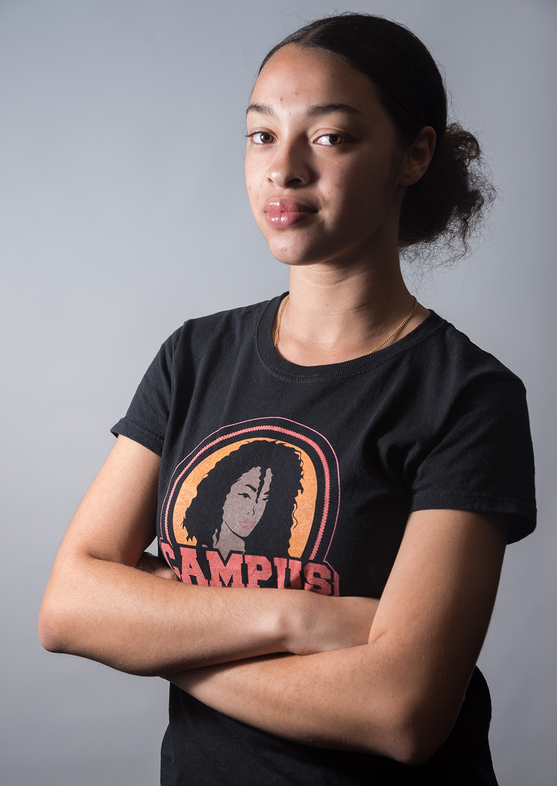
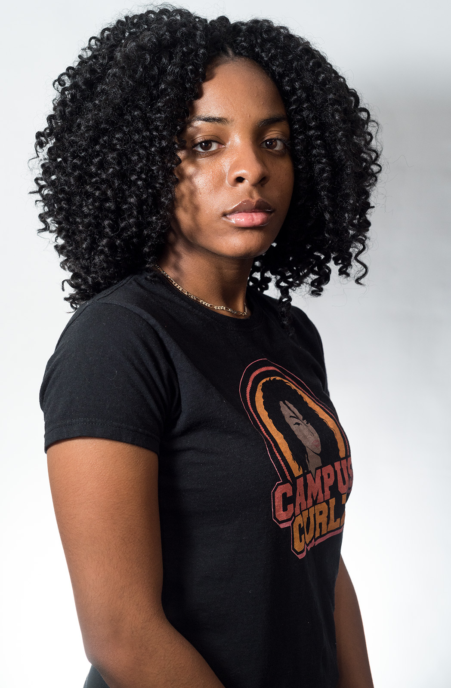

Fourteen black students at UCLA began battling stereotypes about natural hair when they started a chapter of Campus Curlz, a nonprofit organization located at six universities across the country, in fall 2017.
The club promotes and normalizes the beauty of natural hair by hosting events that teach black Bruins how to style and manage their natural hair. It also hosts style parties and hair product swaps, as well as discussions about being a black student on campus.
In addition to the 14 executive members of the club, 60 general members applied and were accepted.
The club does not exclude discussion of other hair types, but they focus on natural hair because of its lack of representation at UCLA and in wider society.
Jordan Wimbish, Alexandria Davis, Kayla Bryant and Anthonya James are all members of the executive board of Campus Curlz at UCLA, and explained their experiences both with the organization and as black women at UCLA.
Jordan Wimbish

After watching one of her favorite YouTube stars discuss founding Campus Curlz at Hampton University, Jordan Wimbish immediately saw the need to bring it to UCLA.
Wimbish, a second-year political science student, said during her first year at UCLA, other black students would approach her and ask how she styled her hair. Wimbish, president of the UCLA chapter, has worn her hair naturally her entire life.
“You would think that it’s normal, but a lot of times black people don’t even know how to do their own hair,” Wimbish said.
She asked her close friends to be the first members of the club and released general member applications. Some applicants wrote that they wished they could have been part of the club for their entire lives.
“We’ve been there to provide support, not even for just natural hair in the black community, but for black people,” Wimbish said.
She added it is difficult to find appropriate hair care products, such as leave-in conditioners or gels with natural oils, anywhere near or at UCLA. She said her mother sends her hair products from her home in Washington, D.C., or she gets hair care products from her job as a brand ambassador for Curls, a black hair product line.
Wimbish said her family has always been supportive of her wearing her natural hair, but she knows it is common for black families to tell their daughters to braid or chemically straighten their hair from as early as when they're 2 years old.
“We owe it to ourselves to know ourselves,” Wimbish said. “To make ourselves stronger, we should know ourselves, and part of knowing yourself is knowing your hair.”
Wimbish recognized that embracing natural hair can be an intimidating task, especially because she thinks some people view it as a sign of resistance against normative white culture as opposed to viewing it as a personal choice.
“At the end of the day, we should realize that (our hair) is just ourselves, and that it shouldn’t have to be political,” Wimbish said. “It can be as simple as just our hair."
Wimbish said she was one of two black female students in her high school in Washington, D.C., and felt alone without a black community there. She said she prepared herself to feel the same way at UCLA.
However, when she found the Black Bruins GroupMe, she said she sighed with relief.
The Black Bruins GroupMe has about 1,000 members, Wimbish said. She added topics in the chat range from faculty members who people in the group feel have discriminated against them to finding a local barber.
Wimbish is one of many members in the GroupMe who experienced racial discrimination at UCLA.
In winter 2017, Wimbish was practicing with the Nigerian Student Association dance team in an empty room in Hedrick Hall. She said a yoga instructor asked all of the students to leave because he reserved the space to hold a class.
Wimbish said she was waiting outside of the room for her friends to finish packing their belongings when the yoga instructor approached other members of the NSA dance team, yelling at them to leave. However, Wimbish said there were other student dance groups also in the room who had been practicing and were still packing up, but he did not address them.
Wimbish said when she and her friends left, the instructor followed them out of the room and the building, yelling at them.
“Then he says, ‘If you guys want to get ghetto, we can get ghetto,’” Wimbish said.
Wimbish said when she tells people about the incident, they immediately ask her if she recorded it, which she did not.
“But there are so many videos of things like this happening, and there are still no consequences,” she added.
Wimbish said one of the students reported the incident to a UCLA Residential Life staff member, but added she does not know how the report was ultimately handled.
Chandra Bhatnagar, director of the Staff Diversity and Affirmative Action/Equal Employment Opportunity Compliance office, said policy prevents him from confirming or denying specific reports. He added he started working at UCLA in November, and that Wimbish's report would have preceded his arrival if she filed the report when the incident occurred in winter 2017.
Bhatnagar said if a staff member is reported to his office with an allegation of discrimination, there will first be a formal assessment to determine if the respondent falls under the office's purview. If the individual does fall under the category and the assessment reveals a need for a formal investigation, the complainant and respondent will provide evidence and be interviewed separately.
If an individual is found guilty of discrimination following the investigation, the finding will be given to the individual's respective campus department, which will then determine punishment, Bhatnagar said.
In addition to this experience, Wimbish said she encounters microaggressions on campus in which people question her acceptance to UCLA and assume she is an athlete.
“I’m not doubting my position here, but a lot of black students here come in with those doubts … because there is such little representation, so you already kind of feel like you don’t belong,” Wimbish said.
In February, Wimbish was invited to give a talk to black students at USC who are interested in starting their own chapter of Campus Curlz.
On March 11, the club participated in #brandlikeagirl, a daylong conference for Campus Curlz members at De Neve Plaza that brought in black, female professionals to speak and host professional development workshops. She said the conference addressed stereotypes about natural hair being unprofessional. It is often referred to as untamed, she added.
“We have to step away from this notion that to be professional you have to look tamed … and we shouldn’t feel that our hair is something to domesticate,” Wimbish said.
Alexandria Davis

Kindergarten graduation was an important day for Alexandria Davis because it was the first time her mother let her wear her hair straightened and down, instead of styled in her usual ponytails.
After that, Davis began going to a salon every two weeks to straighten her hair with hot combs, flat irons and blow dryers.
Davis, a second-year political science and sociology student, decided to begin styling her hair naturally when she starting attending UCLA. She added she later found community support for her decision in Campus Curlz when it was founded at UCLA.
“I’m not at home, so I was in control of what I wanted to do with my hair for the first time,” Davis said.
Davis said throughout her life, her parents discouraged her from wearing natural hair. She added she has stopped going to her home in Los Angeles as frequently in order to be independent at UCLA, but also to avoid discussing her natural hair with her parents.
“They think I’m beautiful, I’m their daughter, but they see me in a different way when I wear my natural hair versus when I wear my hair straightened,” Davis said. “We’ve just reached a consensus on this conversation that it’s something we’ll never agree on, and that’s OK.”
Campus Curlz gave Davis a community where she felt further support to wear her hair naturally.
“I didn’t realize until college how much (straightening my hair) affected me, and how I see myself, and if I see myself as beautiful,” she said. “That was another reason why I joined Campus Curlz, because I didn’t want anybody to ever feel like that.”
It also provided her with a space to discuss microaggressions she experienced on campus.
At orientation, she said another student asked if the reason Davis did not know how to swim was because she was black.
“Initially I tried to brush it off, (but) I learned that was a microaggression and you should never feel uncomfortable just because of what people say or the stereotypes people try to put on you,” she said.
She added that now should have reacted differently by addressing the comment in the moment, because she learned at UCLA that microaggressions are a form of discrimination.
She also said professors and teaching assistants have confused her with other black students on multiple occasions. During fall quarter 2016, a teaching assistant thought Davis and her friend, who both wore their hair in braids, were the same person.
“I won’t say it discouraged me at all from talking (in class), but it made me see it in a different way when I did talk, like maybe I have to go that extra mile so people notice that I’m different,” she said.
Davis chose to go to UCLA because she had previously attended predominantly black and Latinx schools and wanted to interact people who did not grow up in backgrounds similar to hers. She said she likes attending UCLA because it provides her that opportunity, but after experiencing summer orientation and her first quarter at UCLA, she said she started to perceive campus diversity differently.
“I chose to come to UCLA because I felt I needed that diversity, especially going to schools where I saw mostly people who look like me,” Davis said. “Then when I get here, I realize that diversity thing is like a trick. It’s not as diverse as they let on.”
Davis said the discrimination she has experienced at UCLA encouraged her to find a supportive community of other black students through organizations like the Afrikan Student Union and Campus Curlz.
She added her favorite experience in Campus Curlz so far has been organizing events as the events co-chair. At Curls Night Out, one of their first events, more than 80 attendees watched hairstyle presentations and a showcase on black Bruins in business.
“People try to label Campus Curlz as a natural hair club, and it’s so much more than that,” Davis said. “(Our events) show that Campus Curlz is meant to bring people together surrounding hair, but also around general issues of being a college student.”
Kayla Bryant
As a mixed race student, Kayla Bryant said she was unsure where would she fit in when she first arrived at UCLA.
Since then, Bryant said joining Campus Curlz has helped her find her identity as a black woman.
“I went to an all-white high school, and the girls at my high school didn’t accept curly hair as a ... hair type,” she said. “So when I saw this club was being brought to UCLA, I thought, 'I have to be in this club to develop myself and self-love, and uplift others who look like me.'”
Bryant, vice president of the club and a second-year psychobiology student, said her involvement in the club inspired her twin sister to transition to natural hair with her.
“Once I joined this club, she started following the club’s Instagram, and she got really inspired,” she said. “She stopped (straightening her hair), and went natural, and that was cool too, because we were doing this together.”
Bryant heard about Campus Curlz during spring quarter of her first year while enrolled in a class called Sister-to-Sister, which is designed as a safe space for undergraduate African-American women. She said when she joined the club, she found role models who looked like her for the first time.
“That helped me find who I am as a black woman,” she said. “I had been struggling with my hair … I’d been trying to find my space as a woman, and this club came up, and it was exactly where I wanted to be.”
She added in her courses, she is often one of the only black students, which has sometimes made her uncomfortable during class discussions.
“I feel like I’m forced to speak (for) all the black population on campus, and I don’t know everything,” Bryant said. “That's a huge responsibility to speak (for) everybody."
But while members of Campus Curlz may share stories of discomfort or microaggressions on campus during meetings, the club focuses on discussing how to improve the experiences of women of color on campus and promote self-love, Bryant said.
“(This club) helped me transition to how I approach this campus, and how I identify with the campus,” Bryant said. “I just think that it’s very revolutionary, and a huge safe space for women of color.”
Anthonya James
Until shaving her head the summer before she started at UCLA, Anthonya James grew up on a routine of chemically relaxing her hair.
James, a third-year history student, said every three months, her mother would straighten and relax each of her four daughters’ hair, beginning around the age of 5.
However, during the summer of 2015, James started watching YouTube videos of women with natural hair, and decided she wanted to transition her hair. To make the transition, James had to shave her head.
“When I first cut my hair, it was hard because I didn’t know how to take care of it,” she said. “It was liberating, because for a long time, one of the ways people identified me was by my hair … even without the hair, I’m the same person.”
James said her decision to transition inspired her mother and each of her sisters to do the same. She especially wanted her youngest sister to transition so she could appreciate her own natural beauty.
“One time, (she told me) you’re so pretty because you’re lighter,” she said. “I had to sit down and talk to her. I wanted to ingrain in her memory that she is beautiful the color she is."
As James made the transition to natural hair, she found support within Campus Curlz, and is now its co-chair of public relations and marketing. She said although she hasn’t experienced any blatant racism at UCLA, she frequently encounters microaggressions on campus.
“When they happen, you’re just like, 'I know something was wrong with something you just said, but I don’t have the language to express (it),'” she said.
James said she has prefaced her comments in class discussions with a statement about how her opinions do not reflect every other black person’s opinions.
She added members of her class groups or projects will often dismiss her ideas and make assumptions about her identity. On multiple occasions, other students have assumed she is a transfer student, that she could not have been admitted to UCLA as a first-year.
Although James knew her time at UCLA would be different from her experience at all-black elementary and high school, she said coming to California has been a culture shock. At her high school in Washington, D.C., she said her teachers would try to incorporate black history into the curriculum every day.
“My roommate from my first year grew up (in California) and she told me all she learned in school about black people was slavery and the civil rights movement,” James said. “It’s just kind of sad hearing this is all you learned about your people.”
James said she has had plans to attend law school since she was young.